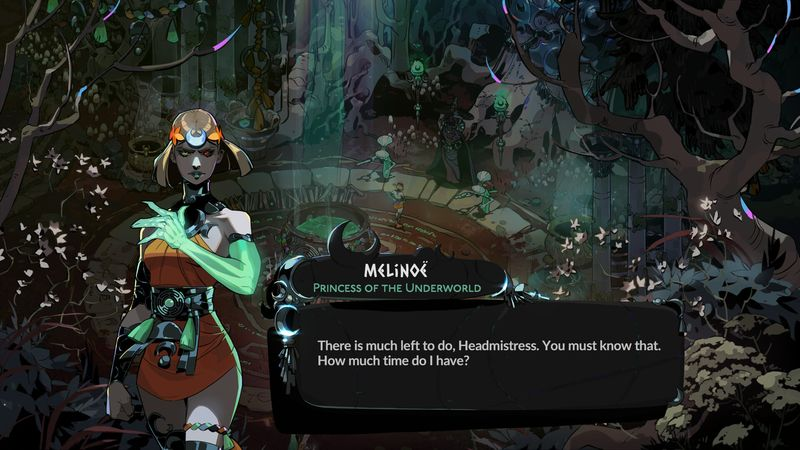
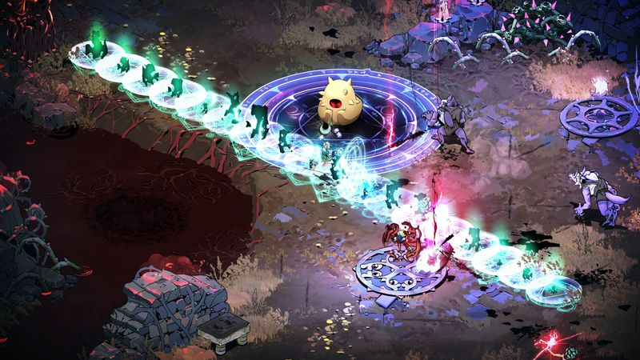

The thirty-second version
Supergiant is unfair to the rest of us.
One more run means one more argument with a Titan and one more cold coffee.
Hades II picks up exactly where Hades left off, which is to say we've barely slept since it launched. The build variety is deeper, the story does that thing where every NPC has an opinion about you by run three, and the combat still feels like the tightest thing in the genre. If you liked the first one, this is not a question.
Okay, what is this thing?
You die, you talk to a witch, you go back out, you die again, and somewhere around run ten a story beat lands unexpectedly and you decide you're never leaving the house again. Supergiant have taken everything that made Hades work and put it under a magical greenhouse. The dark sorcery angle isn't just window dressing; the new magic layer adds a whole extra thing to think about, which for us means whispering 'oh no' when we forget.
Mechanically it's a roguelike, and mechanically it's the best-tuned one on the shelf. Every weapon has its own rhythm, every boon reshapes the run, and going up against the Titan of Time means the shape of a run itself is baked into the combat. That's a lot of systems for a tired brain, but the game keeps them clear at all times. It's ludicrously well made.


Why it escaped the group chat
- Sequel to a roguelike we already lost multiple summers to, which felt personal.
- Adds a magic system that reshapes runs before combat even starts.
- Fully released after a long stint in early access, so it's already been polished into a shine.
Three dads enter
01
Dad Who Skipped the Tutorial
The dialogue pulled me back in for one more run, twice.
I don't like roguelikes. I also don't put Hades II down. The trick is that every death you learn something the story wanted you to know anyway, so it never feels like a lecture. I've got a favourite NPC now. I'm not telling the other two who. I'm protecting the peace.
02
The Descent Guy
The best-designed action roguelike on the shelf.
I watched one run and started sorting the boon tree in my head. Every weapon has an identity, every gear pick has a job, and the new magic layer means the pre-combat choices now matter as much as the combat itself. I'm insufferably happy. I'm also cranky that nobody else is building around my favourite weapon.
03
Normal-ish Dad
Runs are still 30-ish minutes, which is why we're doomed.
The sensible thing about Hades II is the run length. The evil thing is that dying takes ten seconds and starting again takes zero, which means one more run is a lie you tell yourself six times. I tapped out around 1am on a Tuesday and blamed the game, which I maintain is fair. I was back in the next night.
Who it is for and what to watch
Invite these people
- Anyone who lost a summer to Hades and would like to lose another one
- Roguelike heads who want a story that keeps up with the build variety
- People whose bedtime is negotiable when a boss says something spicy
Dad caveats
- It's a sequel first and an on-ramp second; play the original if you haven't
- 'One more run' is not a suggestion, it's a diagnosis
- A late-game boss will humble you and you will come back for more
Receipts
Played on PC by all three of us since launch, with two of us clearing the main story and the third still stuck on the same weapon and refusing to admit it.